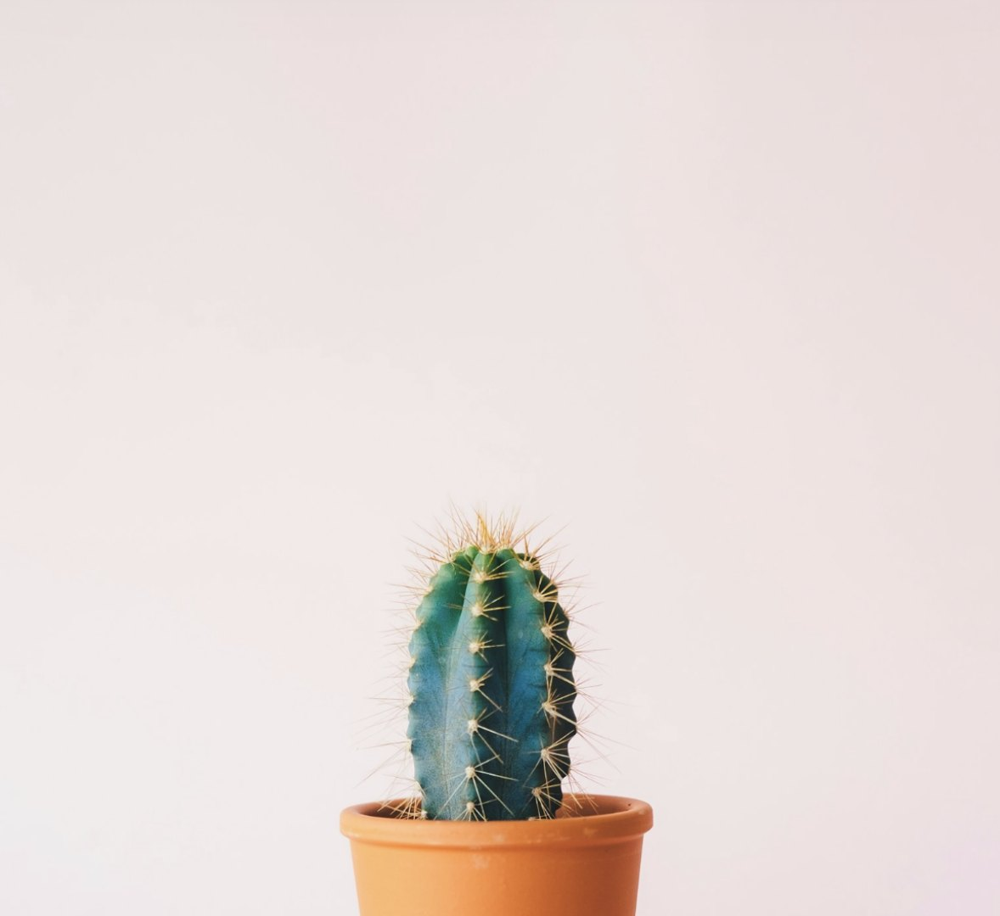

04 / The product idea
A little bottle. A bigger idea.
We're exploring a liquid fertilizer that fits the everyday routines of indoor growers and home gardeners: a few drops in the watering can, not a new hobby.
What we're exploring
- A liquid fertilizer you add while watering
- Made with repurposed, otherwise-unused milk
- Simple packaging sized for houseplants
What we don't know yet
- How plants actually respond
- Shelf life, stability and odour
- Price and the best format